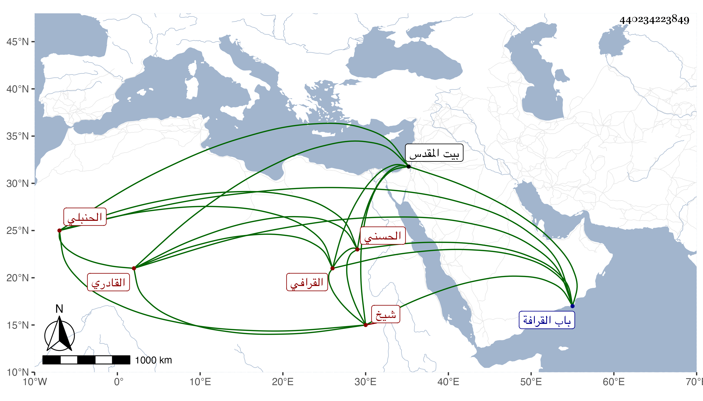

0902Sakhawi.DawLamic.ITO20230111-ara1.EIS1600.440234223849
Biography ID: 440234223849
206
محمد بن موسى بن محمد بن علي بن حسين زين العابدين بن الشرف بن الشمس الحسني القرافي الحنبلي القادري شيخ الطائفة القادرية والآتي أبوه . مات عن نحو خمس وخمسين سنة في ربيع الأول سنة خمس وثمانين بعد تعلل مدة طويلة وصلي عليه بمصلى المؤمني في محفل شهده أمير المؤمنين لصداقة كانت بينهما فمن دونه ثم رجعوا به إلى زاوية عدي بن مسافر محل سكناه من باب القرافة فدفن عند أبيه وجده رحمهم الله وكان إنسانا خيرا متوددا متواضعا منجمعا عن الناس حج وزار بيت المقدس وسمع الحديث به وبالقاهرة بقراءتي وقراءة غيري بل حضر عندي في بعض مجالس الإملاء رحمه الله .
